你没有听过这个武汉人的名字，但一定见过他的“战疫”插画
原文链接 备份链接 2020年注定不平凡。武汉封城、公众场所关闭、复工日期不断推迟……疫情让武汉人的生活被迫减速甚至停滞，而一批又一批的医护人员和志愿者逆行奔赴战场。 疫情期间，我们见证了无数感人的英雄故事，也 …
以下文章来源于地球青年图鉴 ，作者地青

杨飞霖站在人来人往的纽约时代广场，戴着口罩，手里举着一块牌子，上面写着一句她自己想出来的标语“Mask+Asian≠Virus（口罩+亚裔≠病毒）”，牌子的另一面则写着“STOP THIS NEW ANGLE OF RACISM（停止新形式的种族歧视）”。
随着疫情扩散，尽管各国都在为控制疫情作出努力，但仍有一些地方出现了针对海外华人的偏见和污名化，甚至引发了暴力事件，“有些受害者的经历真的很吓人”。
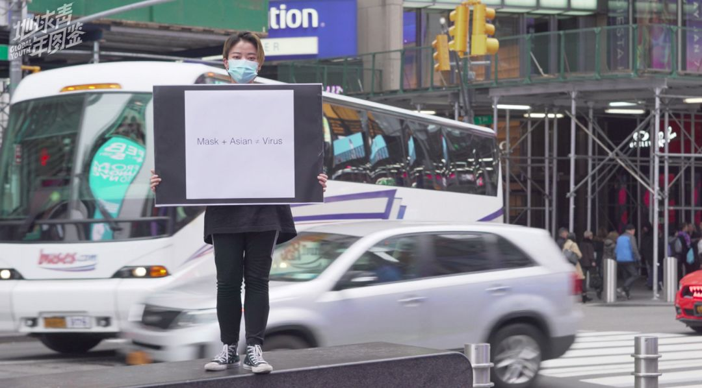
△ 杨飞霖在时代广场
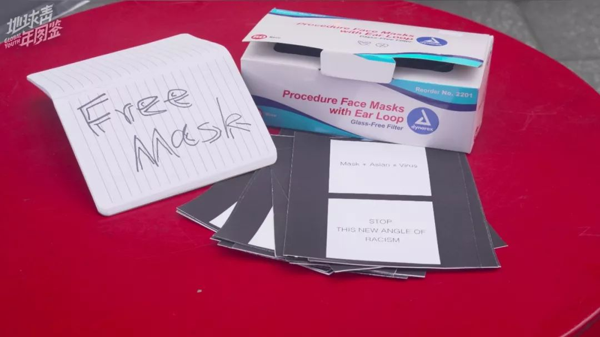
△ 杨飞霖在时代广场上送给路人的免费口罩和准备去贴的标语海报。
杨飞霖没办法对出现的歧视事件视而不见，她想出了反歧视标语，把标语印在T恤上，穿着T恤到纽约地铁里面贴写有标语的海报，去时代广场给路人做宣传，向路人免费发放口罩，并给他们拍摄肖像，“我们这一代人是历史的见证者，很多人没有做出回应和努力，我不能批判别人，只有自己多做一点，去填补一些漠视”。
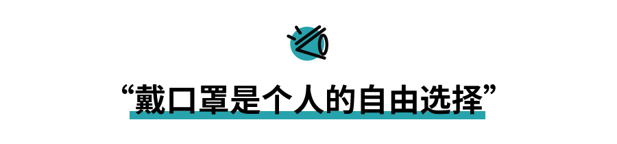

△ 纽约地铁。摄影：杨飞霖
杨飞霖来自云南，现在美国纽约新学院攻读传媒专业研究生。前不久，杨飞霖戴着口罩准备上纽约地铁，一名男子在她身后高声说“她戴着口罩”，她扭头问他：“我这还有多余的口罩，你要不要？”飞霖的一位亚裔朋友也有类似的遭遇，他在去俱乐部玩的时候受到了语言攻击，“你有病毒，请滚回你的国家”。在纽约住了三年，这个“开明、文化多元、整体上很安全的地方”，第一次让飞霖感觉到不安全。
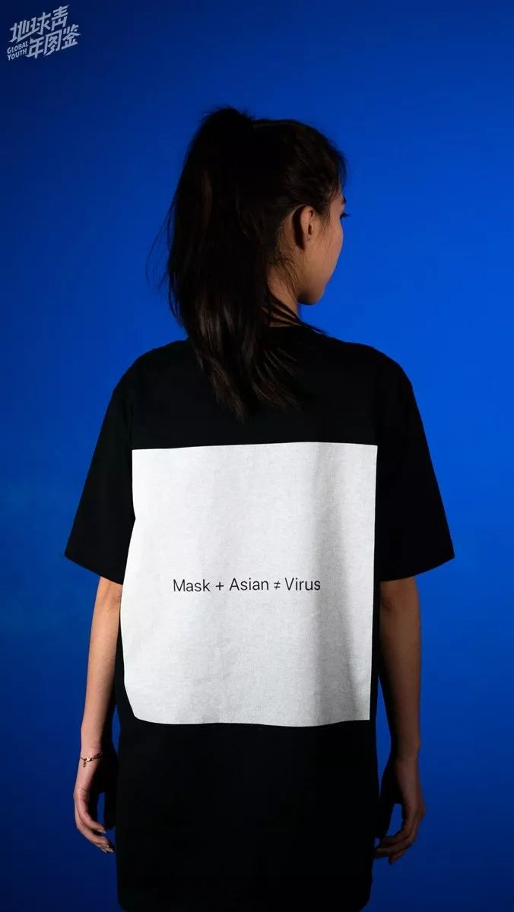△ 杨飞霖设计的标语T恤模特照
飞霖意识到这和中西方迥然不同的“口罩文化”有一定关系。疫情当前，与国内倡导全民戴口罩以保护自己、防止传染他人不同，在法国和英国，卫生部门明确不鼓励没有病状的人戴口罩。而在纽约，地铁里每天都有很多穿着奇装异服的人，大家很少对别人另眼相待，但在这个时间点，戴口罩还是会十分引人注意。
“人们对未知新病毒的恐惧愈深、愈缺乏了解，遇到亚洲面孔戴着口罩出街，越会有相关的联想与恐惧，但恐惧是一回事，做出带有敌意的反应就是另一回事了，如果说以这个事情为借口针对亚洲人或者针对中国人，那就是种族歧视”。

△ 时代广场，截取于杨飞霖的纪录片
国内疫情刚开始传开时，杨飞霖在纽约看到不少亚洲人戴口罩，但发生了一些因病毒恐惧亚裔遭受暴力等事件后，戴口罩的人就少了。随着疫情蔓延，又正值流感季，这样的现象让她觉得这件事情很不正常。“戴口罩应该是每个人的自由选择”，亚裔不应该因为戴口罩而背负“病毒”的恶名，更不应该因为恐怖被污名化而放弃佩戴口罩。
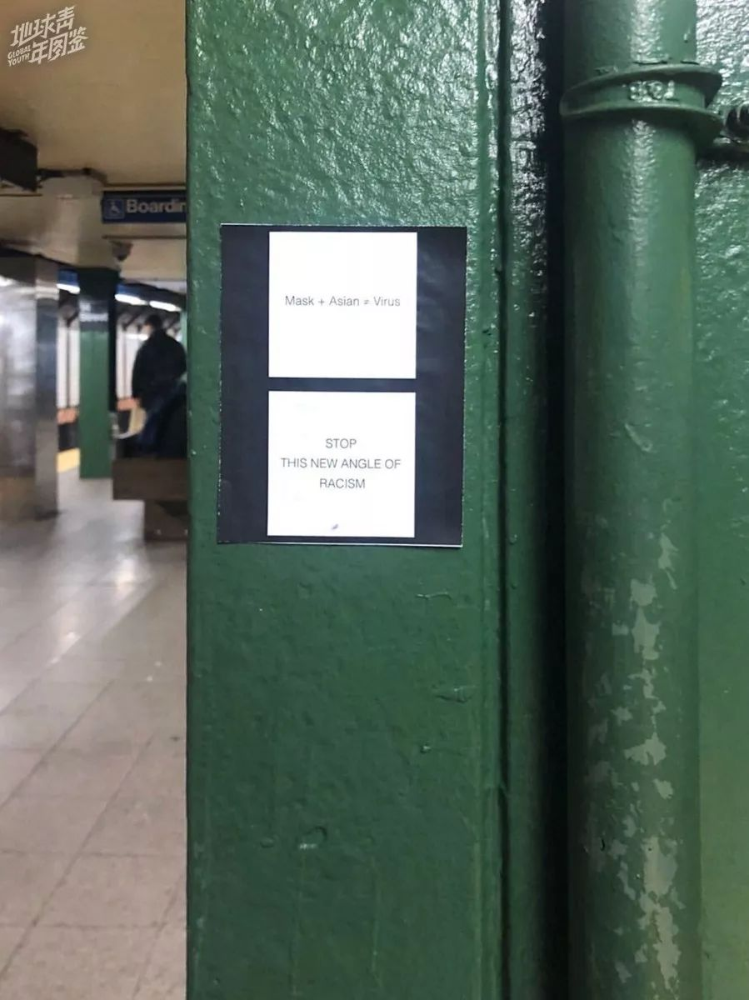
△ 纽约地铁站里贴上反歧视的标语海报
有了在纽约地铁的亲身经历后，杨飞霖又看到有几家外国媒体在头版头条直接使用“中国病毒”“黄祸”等词汇，她当时就想到“口罩+亚裔≠病毒”这句标语，她把标语印在T恤上，又打印了八九十张小海报，海报上加了一句“停止新形式的种族歧视”，当天晚上就穿着T恤到地铁里去贴海报了。

△ 杨飞霖在纽约地铁贴海报
杨飞霖选择了学校附近的团结广场站、布鲁克林大桥站、市政厅站和唐人街等几个站点，“贴的时候很小心，尽量保持低调，因为不想惹麻烦”。贴海报的时候，她看到一对男女在聊天，等她贴完，那个男的念了一遍标语，然后笑了一下。杨飞霖转头看了他一眼，只见他掏出手机给那幅海报拍了张照片。杨飞霖有点受到触动，“他是什么样的想法无所谓，只要海报上的内容有传递出去就达到效果了”。
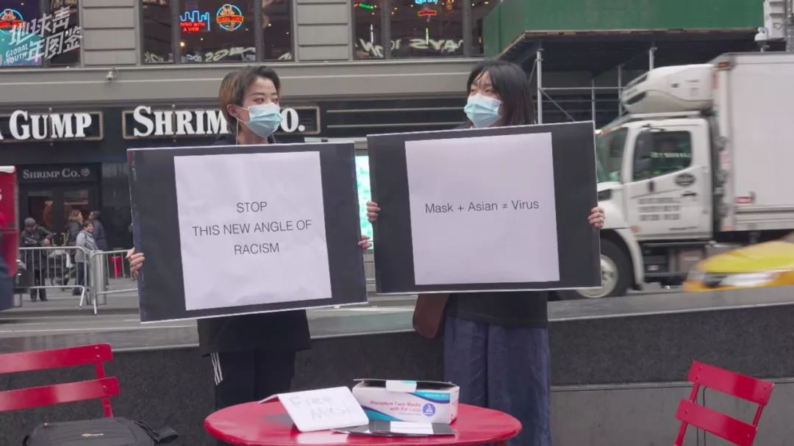
△ 杨飞霖与朋友在时代广场举牌。
杨飞霖的几个朋友听说这件事后，和她要来海报，要帮助她一起宣传。她想到，不然干脆把标语放大印在牌子上，到时代广场去做活动。
第一次去时代广场做活动的时候，她戴着口罩，站在高台上，举着写有标语的大牌子，每当有人停下来，她就向他们解释，让他们知道有这样一个错误的观念：有一些不怀好意的人用病毒作为借口，来做一些歧视亚裔的事情。她还会送他们一个口罩，为他们拍下佩戴口罩的肖像照片，并将整个过程拍摄成纪录片。
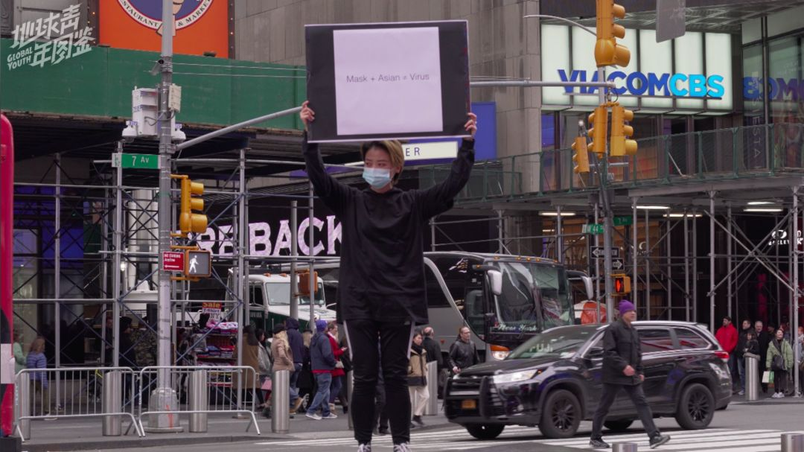
△ 杨飞霖在纽约时代广场。
三个小时里，有二十余人停下来与她对话，给出的都是善意。一位中东裔的大哥跟飞霖说，他非常理解她的心情，因为911的时候，也有很多人只是因为他是中东人的长相，就会歧视他。一位来自明尼苏达州的游客表示：“这样的行为艺术可以让更多的人注意到这个问题，从而帮助消除华人在公共场合戴口罩被污名化的问题。”还有人停下来问飞霖的感受，她坦言“感到不公平、愤怒，还有一点点害怕”，路人安慰她不要担心，并肯定了她的勇气。
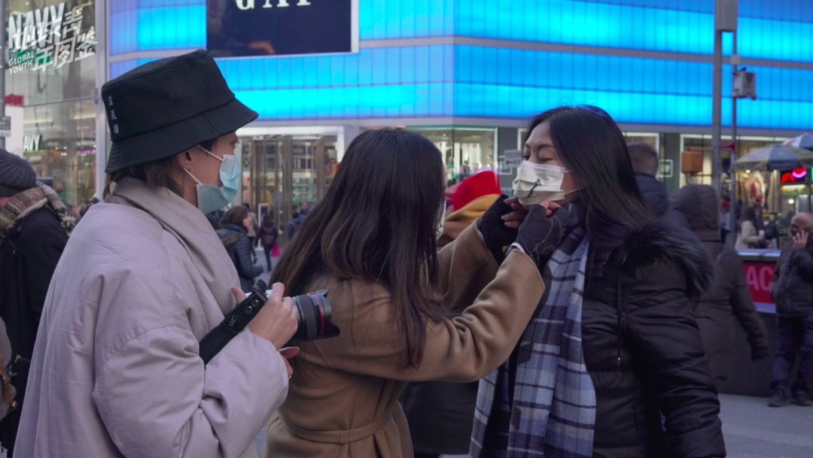
△ 飞霖和其他反歧视活动的中国志愿者在时代广场偶遇。截取于杨飞霖的纪录片

△ 给标语拍照的游客，截取于杨飞霖的纪录片
周末的时候，飞霖再一次去时代广场做活动。这次她碰到了一群中国志愿者，十几个人一起做“我不是病毒”的free hug（免费拥抱）活动，效果非常好。他们主动上来拥抱飞霖，表示理解并感激飞霖做出的一切努力。经过的不少路人也表达了类似的看法，有人要求和飞霖合影，说喜欢她的标语，也有人要走了飞霖的Twitter和Instagram账号，想要帮她一起宣传这件事。
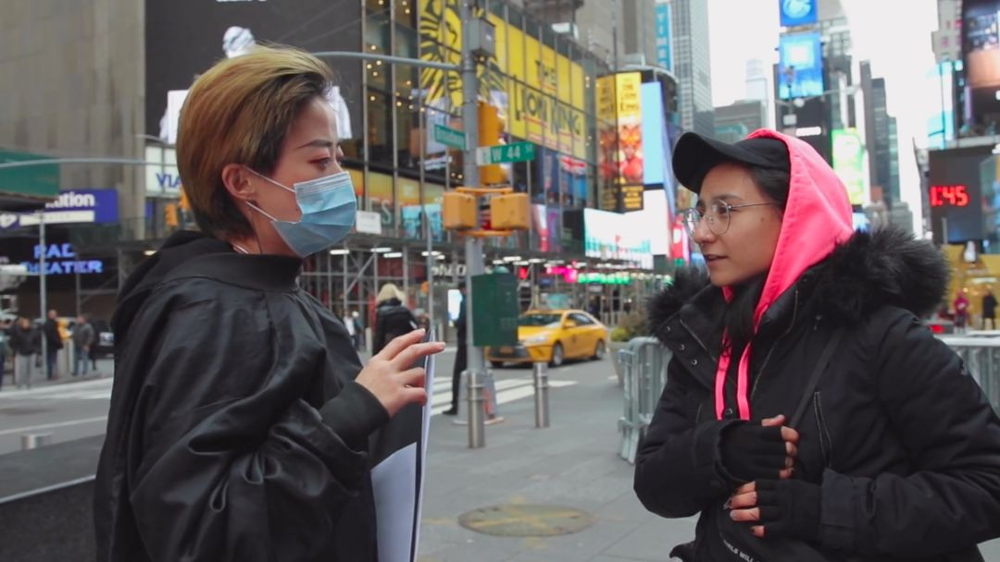
△ 美国媒体采访视频截图
在时代广场，飞霖接受了一家美国媒体的采访，采访视频传到网上，很多人都看到了，一些同样为疫情奔走的海外中国人群体后来碰到飞霖，都问她，“你就是时代广场那个女孩？”飞霖感慨，“有些东西很难量化，但是有意识地去做一些事情的话，还是会看到效果的”。


△ 摄影：杨飞霖
来美国读研之前，杨飞霖曾在媒体工作多年，她现在仍会以“媒体人”的标准要求自己，“我既然有这个途径，就一定要去表达，就像记者会去讲故事，摄影师则是举起相机”。

△ 摄影：杨飞霖
她选择佩戴口罩的路人拍摄肖像。近距离的黑白色肖像，镜头用的是广角镜头，整个视觉都聚焦在口罩上面。她特意在拍时放大口罩，是想表达在错误的联想当中，大家并没有看到口罩后面那些活生生的个体，而只是看到口罩，因此放大了对病毒的恐惧。
她想记录下每一个个体，希望真正看到这些年龄不同、身份不同、种族不同的人，处在这个当下，在口罩后面藏着什么样摄的情绪。

△ 摄影：杨飞霖
杨飞霖曾在学校医务室遇到一位中国女生，她戴着口罩，还戴着护目镜，整个人看上去忧心忡忡，她们自然而然地聊起来疫情的事情，女生说很希望情况可以快点好转。在时代广场，有很多外国人听了飞霖对“口罩+亚裔≠病毒”的解释后，选择戴上口罩，表明支持中国人、支持正在受害的患者、支持抗击疫情的立场。
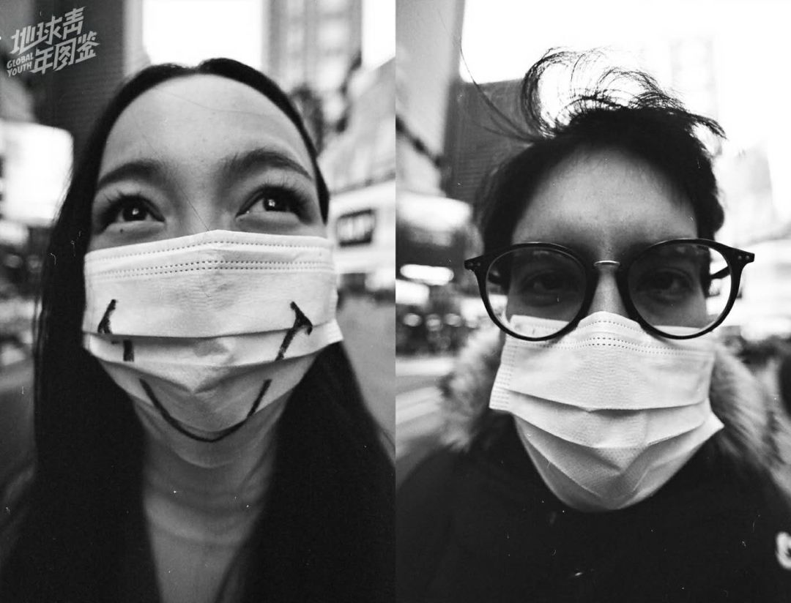
△ 摄影：杨飞霖
对于杨飞霖自己来说，口罩背后则是内疚和不安，“国籍是我身份认同的一部分，国家出了这样的事情，我一开始有点内疚。在这边，每天出去都要面对不掌握相同信息的人们，有人疑惑、好奇，有人的眼神并不善意，当你去理解别人为什么这么想你的时候，你的心理是很复杂的。”拍摄这些肖像对于飞霖而言，也是试图从被拍摄对象的身上，反射她自己体会到的一些感想跟信息。
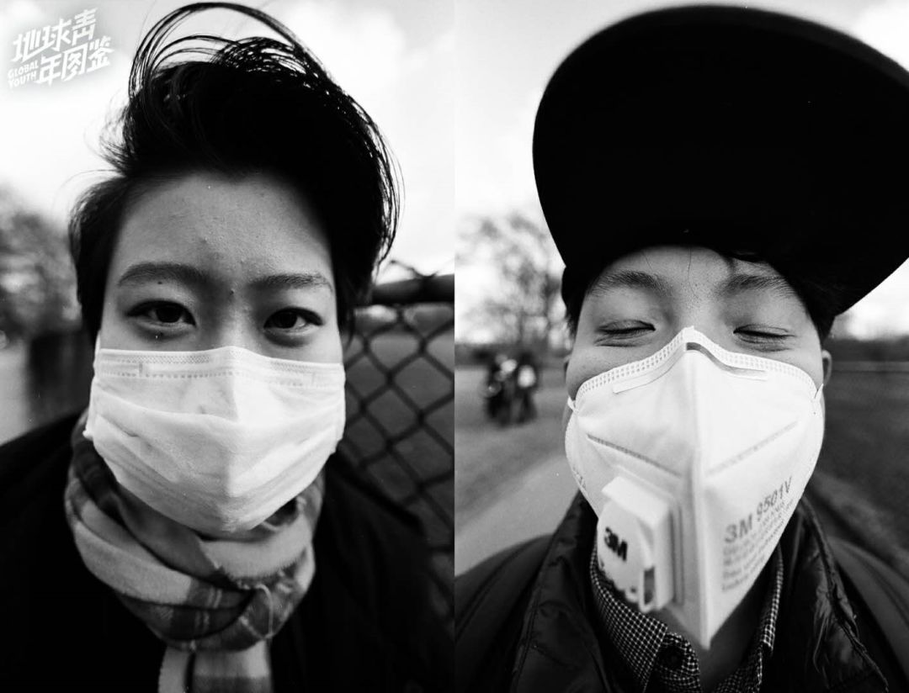
△ 摄影：杨飞霖
杨飞霖最后拍出来的肖像一共有四五十张，她打算把它们全部打印出来，希望有机会能得到集中的展示，“当外国人开始理解如果你生活在一个环境里面，你周围的人每天必须戴口罩出门，他们或许会多一点共情”。

△ 慈善喜剧之夜。摄影：杨飞霖

△ 中国女生街头发放“慈善喜剧之夜” 演出宣传单。摄影：杨飞霖
杨飞霖刚刚完成“慈善喜剧之夜”的拍摄，牵头的是两位在纽约打拼的中国女生，她们是喜剧脱口秀演员，为了筹集善款并全部捐赠到国内，她们请来喜剧演员在切尔西音乐厅表演。杨飞霖跟着两位女生走了四五条街发放演出宣传单，在咖啡馆休息的时候，其中一位女生说，她最近每天早上起来看新闻都会哭一会儿，看到武汉的小孩吃不上饭、看到有人和家人隔离两地，觉得很多无辜的人在为别人的过失承担后果。

△ 杨飞霖与一位路人交流。
杨飞霖也受类似的“过度共情”的困扰，家人让她“正能量”一点，多关注正面信息，但她却觉得“负面信息不等于负能量”，“整个国家要正能量的话，就是要相信我们能战胜疫情。但是，如果你不去关注个体的故事，是没有办法去关心一个整体的。有的人全家都感染了，有的人在国外受到了歧视，不管个体的故事有多悲伤，他们的故事才是最重要的。”
杨飞霖最近打算整理一下被疫情打乱的生活和学业，不过她仍然会继续去记录和表达她所看到的一切。她近期要去采访学校里的一个女生，在和学校只有一街之隔的地方，大街上的一位陌生男性对她说了侮辱性的词汇，还打了她的头，飞霖觉得有必要为这件事情发声、反击，她在facebook上面写道：“We individual Chinese, have nothing to be ashamed of.（作为中国人中的一员，我们没有任何好羞愧）”。
*****图片均由受访者杨飞霖提供*****
作者 | 羽祺
*编辑 | 图拉*
实习生 | 匡若彤 易琬玉
凤凰新闻客户端 凤凰网在人间工作室出品


新型肺炎疫情牵动人心，
《在人间》现面向全国网友征稿：
（一） 疫区影像日记
如果你身处疫区
请你用照片（视频）和文字记录
你所听闻和见到的一切
照片不少于3张
文字不少于300字
投稿方式：微信联系人间君（zairenjianliving）
（二）抗击疫情真实故事
无论你是一线医护人员、志愿者、
确诊或疑似患者及家属、已治愈出院人士等等，
如果希望讲述疫情相关经历，
请微信联系人间君（zairenjianliving）

原文链接 备份链接 2020年注定不平凡。武汉封城、公众场所关闭、复工日期不断推迟……疫情让武汉人的生活被迫减速甚至停滞，而一批又一批的医护人员和志愿者逆行奔赴战场。 疫情期间，我们见证了无数感人的英雄故事，也 …
原文链接 备份链接 湖北人什么时候能回北京？依然个未知数。青年作家邓安庆的老家湖北黄冈武穴市，离武汉两百公里远。每年春节，他跟千千万万人一样回家乡过年待一周再返岗。1月23日，武汉封城，次日，黄冈以及所管辖的县市也都相应“封城”。直至现 …
原文链接 备份链接 经过这次疫情，我对《我不是药神》这部电影感触特别深。我明白了平时物资储存的重要性，这样在特殊时期才能派上大用场。 口述 | 赵 勐 整理 | 王仲昀 我叫赵勐，干物流行业的。大年初一下午，我一个人在家睡觉。醒来看到微信 …
原文链接 备份链接 医护人员冲锋在一线有需要，我们国企和其他企业就要一起做好后勤保障工作，挑起企业抗击疫情的责任担当，相信众志成城、共克时艰不是一句空话，大家一起努力，疫情终将过去，一切都会好起来。 口述 | 周 道 整理 | 周 洁 小 …
原文链接 备份链接 总体而言，港人对待疫情，后来就没有内地那么紧张了。我妈妈讲，她觉得作为一个香港居民，自己最大的感受是彷徨。她抱怨道，在香港，没工开等于没饭吃了；公司起先通知放假到24号，何时复工再议，而现在仍然是等通知的状态。 …